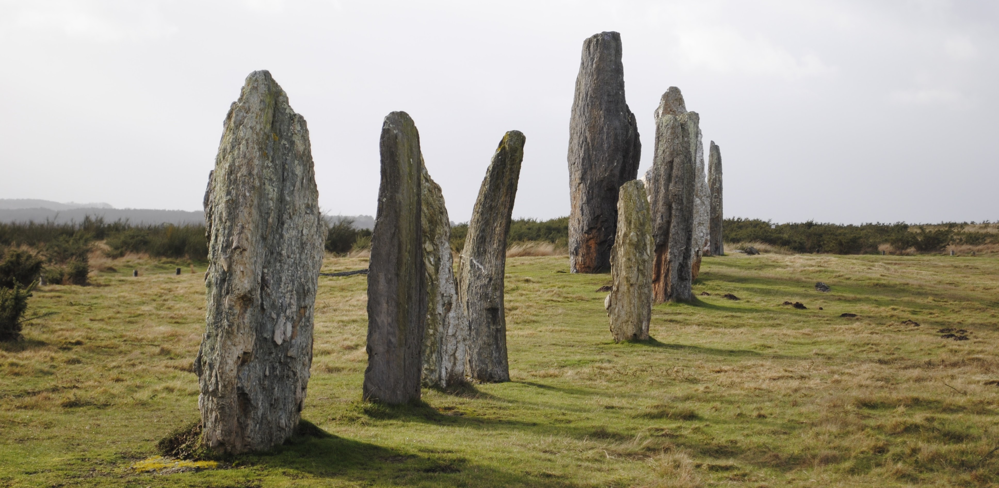

Standing Stones and Megaliths of St Just - A GIS project

I constructed the following ESRI ArcGIS StoryMap project for the college course "Geographic Information Systems" taught by Professor Gordon Longsworth at the College of the Atlantic, in Fall 2020. I have embedded it below as a sample of my undergraduate GIS work.
Follow this link for to see this StoryMap.